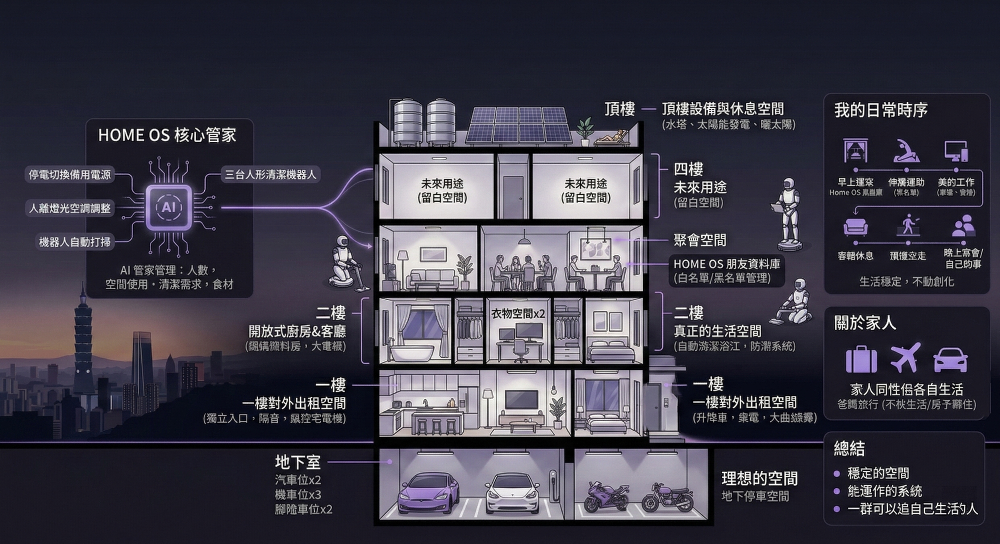

最近我一直在想一個問題：理想的日常到底是什麼？有人會說是環遊世界或財富自由。但我發現我真正想要的，其實不是那些充滿戲劇張力的畫面，而是一種生活可以穩定運作的感覺。就像一個長時間運行的系統，不用每天修復，它只是一直低調且精準地運作著，而人，只需要安穩地生活在裡面。

# 居住載體：五層樓與 HOME OS 系統
如果把這種抽象的系統感具體化，那大概會是一棟座落於雙北的五層樓獨棟住宅。但它不是普通的鋼筋水泥，而是一棟會自己思考、自己運作的房子。
整棟建築的底層邏輯，由一個名為 HOME OS 的 AI 管家系統接管。它不會像傳統智慧家電那樣頻繁且刻意地干涉你的生活，它的存在感極低，卻無處不在。它知道房子裡現在有幾個人、哪些空間正在被使用、冰箱的耗材是否達到安全庫存，甚至會在無人時段，默默調度三台人形機器人完成整棟樓的清潔排程。
基礎設施 (B1 & 1F)
B1 停放著我的特斯拉與家人的交通工具。1F 則是對外出租的商業或獨立空間，具備絕對的實體隔音與獨立出入口，確保外部經濟活動與內部生活系統的完全解耦。
核心運算區 (2F)
三房一廳的開放格局。我的房間配置極簡：升降桌、筆電、大曲面螢幕與雙人床。浴室導入自動清潔與防潮科技，廚房則依據母親的料理習慣進行動線最佳化。
社交節點 (3F)
專屬的聚會模組。訪客需透過 HOME OS 登錄，系統會自動記錄空間使用與復原狀況，透過簡單的演算法生成訪客白名單，確保社交活動不會引發系統亂度。
系統留白 (4F, 5F & 頂樓)
4F 與 5F 保持未定義狀態，保留未來的擴充彈性。頂樓則是能源中心，佈建太陽能陣列與水塔，並留有一塊能光合作用的放空露台。
# 一天的理想日常時間軸
如果這些硬體與軟體條件皆已成立，那麼我的一天，將會按照以下節奏精準推進：
07:00 AM 系統喚醒
HOME OS 緩緩開啟窗簾，讓自然光取代鬧鐘。在地板鋪上瑜珈墊進行簡單伸展，無須繁雜的準備，純粹喚醒身體機能。
08:00 AM 進入工作流
坐到升降桌前，接上曲面螢幕。環境音響自動播放專注頻率，在無干擾的狀態下進入深度工作 (Deep Work) 模式。
03:00 PM 離線與充電
工作告一段落。步出房間到客廳與家人閒聊，或是獨自前往頂樓的露台曬曬太陽，讓大腦從高頻運轉中冷卻。
07:00 PM 社交與生活節點
若家人邀約朋友，便前往 3F 的聚會空間。若無特別安排，就在房間看看書、寫寫部落格，或是享受安靜的獨處時光。
11:00 PM 系統休眠
全棟建築進入低耗能休眠模式，保全與感測網路接管邊界防護。結束這平凡卻完美的一天。
# 關於家人：空間連結與生活解耦
我希望家人可以住在同一棟房子裡，但擁有各自獨立的生活運作邏輯。
這也是為什麼這棟建築需要被切分成不同樓層與機能區塊。物理空間上的緊密連結，並不代表生活型態必須互相干涉。在這個架構下，二樓是專屬的生活區域，而 HOME OS 則全面接管了整棟房子的環境清潔、耗材補充與基礎維護。
當「照顧房子」不再是一種日常負擔，居住者才能真正擁有時間的自由。
如果爸媽想出國旅行，隨時可以提著行李就走；如果不喜歡出遠門，平日就開著車出去走走。他們可以隨心所欲地經營自己的日常，不用被瑣碎的家務綁住，更不用被這棟房子綁住。
最後才發現的一件事
寫到最後，我才發現一件事情。我想像的理想生活，其實沒有什麼特別華麗的畫面。沒有每天旅行，沒有每天冒險。
它只是一個穩定的空間。一個能運作的系統。一群可以過自己生活的人。
如果這些條件成立，那每天安穩醒來的那一天，大概就已經是理想的日常了。
本月主題為「理想的日常」。分享如果將生活視為一個穩定運作的系統，會是什麼模樣。